Bernd Hesse

Bernd Hesse ist Schriftsteller, Literaturwissenschaftler und Jurist. Sein literarisches Werk umfasst Romane, Erzählungen und Novellen, Lyrik, dramatische Arbeiten und Hörspiele sowie literarisch gestaltete authentische Kriminalfälle.
Einen besonderen Schwerpunkt seiner literaturwissenschaftlichen Arbeit bilden Leben und Werk E. T. A. Hoffmanns sowie die Literatur der Romantik.
– auf die Frage, wo er am besten schreiben könne
Mit dem Schreiben begann er früh. Schon als Schüler entstanden erste literarische Texte, darunter Aphorismen und Gedichte. Wo Papier und Füllhalter zur Hand waren, wurde geschrieben – offenbar gab es schon damals wenig Anlass, ein leeres Blatt auch leer zu lassen.
Als Abiturient gehörte er einem Schreibzirkel an, der von professionellen Schriftstellern geleitet wurde. Zu seinem wichtigsten literarischen Mentor wurde dort der Schriftsteller Kristian Humbsch (* 9. April 1942 in Kamenz; † 24. Januar 2026 in Schwedt/Oder). Humbsch begleitete seine ersten Schritte als Schreibender und prägte zugleich seine literarische Lektüre. Unter dessen Anleitung schrieb er zunächst Gedichte und Kurzerzählungen; später entstanden erste Romanversuche.
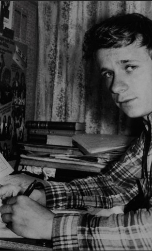
Diese frühen Arbeiten blieben unveröffentlicht. Noch als Schüler trat er mit eigenen Texten erstmals bei einer Lesung vor Publikum auf.
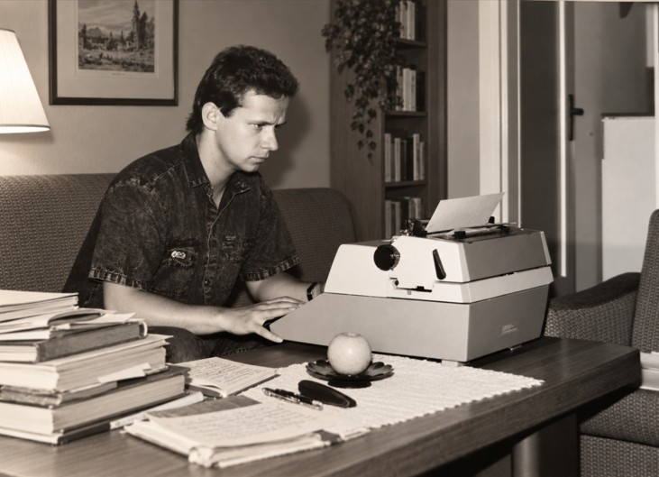
In den 1980er und 1990er Jahren trat neben Füllhalter und Kugelschreiber zunehmend die Schreibmaschine. Gedichte, Erzählungen und andere literarische Texte entstanden nun auch auf der Maschine – das Schreiben selbst blieb dabei ein ebenso langsamer wie unmittelbarer Arbeitsprozess.
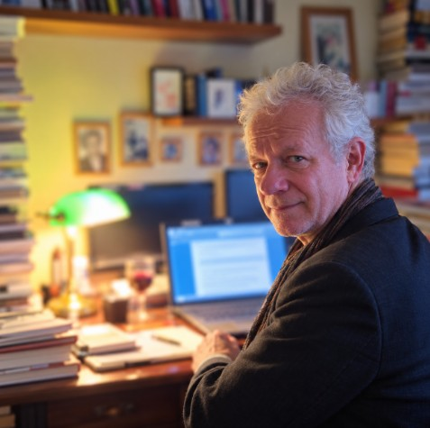
Vieles hat sich seitdem verändert: Die Schreibmaschine ist dem Notebook gewichen. Geblieben sind der Schreibtisch, die Bücher – und die Begeisterung für das Schreiben.
E. T. A. Hoffmann – Ein Lebensbild in Anekdoten
Seine Arbeit als Schriftsteller und Literaturwissenschaftler konnte Bernd Hesse in besonderer Weise in dem gemeinsam mit Jörg Petzel verfassten Buch E. T. A. Hoffmann – Ein Lebensbild in Anekdoten verbinden. Gründlich recherchierte Fakten aus Leben und Werk E. T. A. Hoffmanns werden darin in unterhaltsamer und allgemein verständlicher Sprache erzählt. Wissenschaftliche Genauigkeit und Freude am Erzählen sollten sich dabei nicht ausschließen, sondern gegenseitig ergänzen.
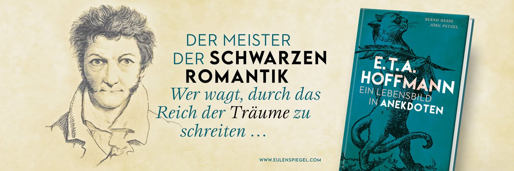
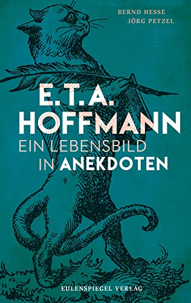
Besonders erfreute beide Autoren die außergewöhnlich positive Resonanz aus der Hoffmann-Forschung. Anerkannte Kenner E. T. A. Hoffmanns wie Professor Wulf Segebrecht, Professor Klaus Kanzog und Professor Bernhard Schemmel äußerten sich in persönlichen Briefen anerkennend über Inhalt und Gestaltung des Bandes.
Auch in Presse und Literaturkritik fand das Buch Aufmerksamkeit. Rezensionen und Besprechungen erschienen unter anderem im Wittenberger Wochenspiegel und auf literaturkritik.de. Eine besondere Würdigung bedeutete die Erwähnung in der Süddeutschen Zeitung: Florian Welle widmete dem Anekdotenband in seinem Feuilletonbeitrag „Nach dem Biere – die Satire“ vom 14. September 2022 mehrere Absätze.
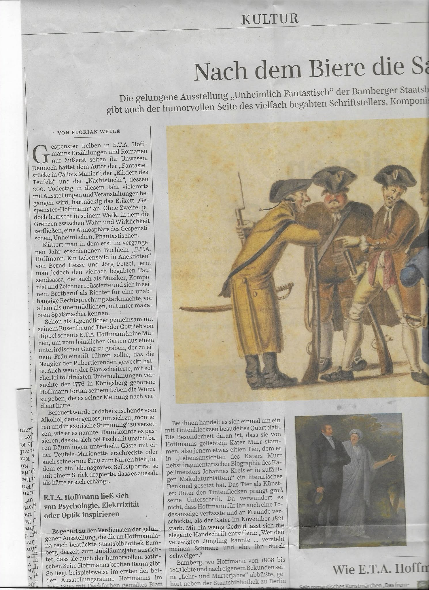
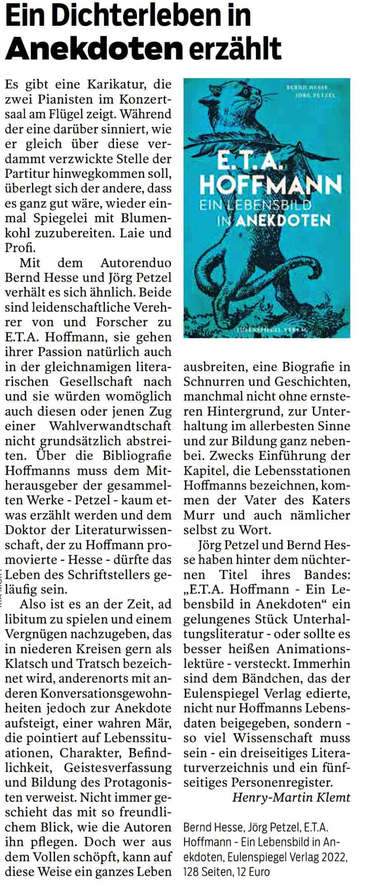
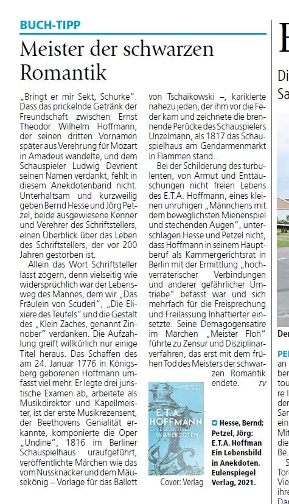
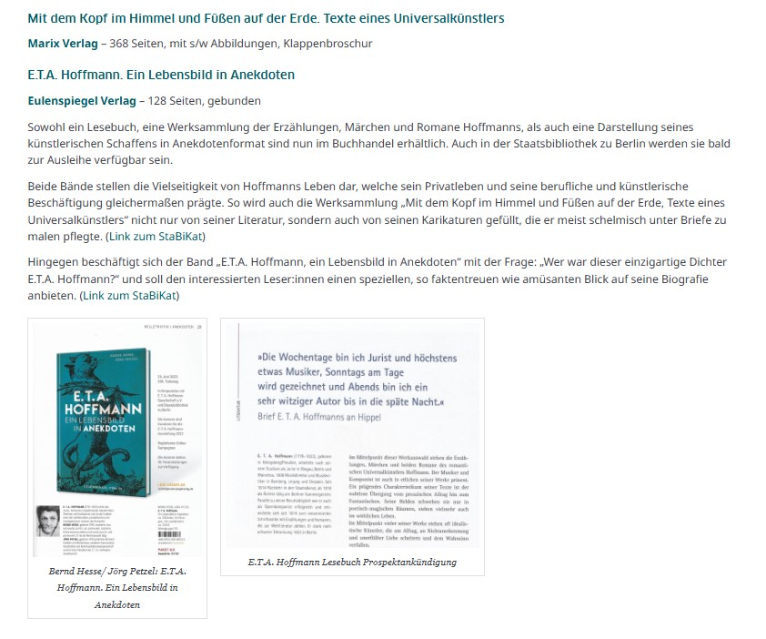
Mit dem Buch unterwegs
Dem Erscheinen des Bandes folgten zahlreiche Lesungen an unterschiedlichen Orten. Bernd Hesse und Jörg Petzel stellten ihr gemeinsames Buch unter anderem im Kleist-Museum in Frankfurt (Oder) vor. Eine weitere Station war Schloss Stavenhagen, wo eine Lesung in Zusammenarbeit mit dem Fritz-Reuter-Literaturmuseum stattfand.
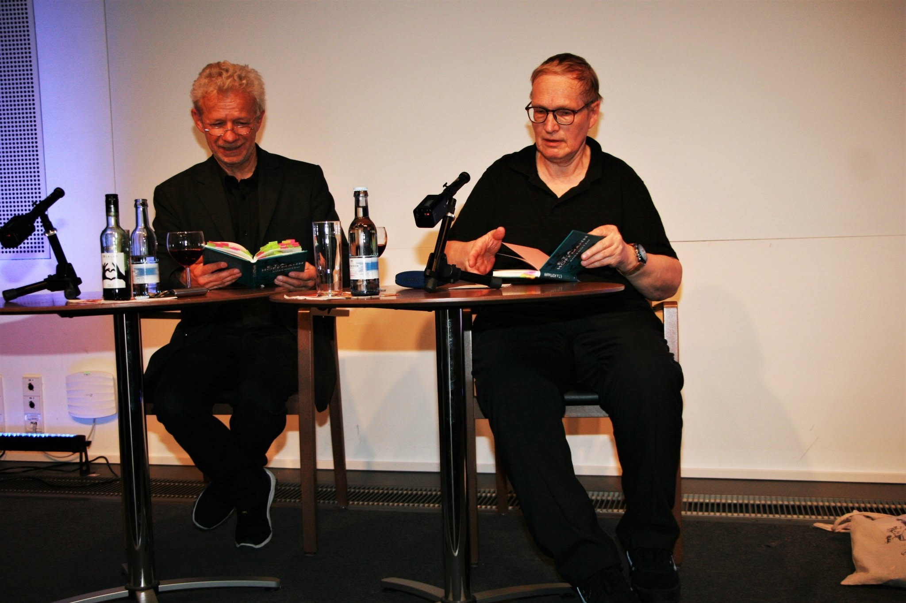
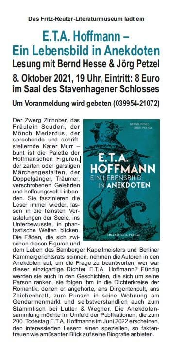
Vom Buch zum Hörbuch
Schließlich erhielt auch dieses Buch eine akustische Gestalt. Die Hörbuchmanufaktur Berlin produzierte E. T. A. Hoffmann – Ein Lebensbild in Anekdoten als Hörbuch. So wie Bernd Hesse und Jörg Petzel das Buch gemeinsam geschrieben hatten, sprachen sie auch das Hörbuch gemeinsam ein.
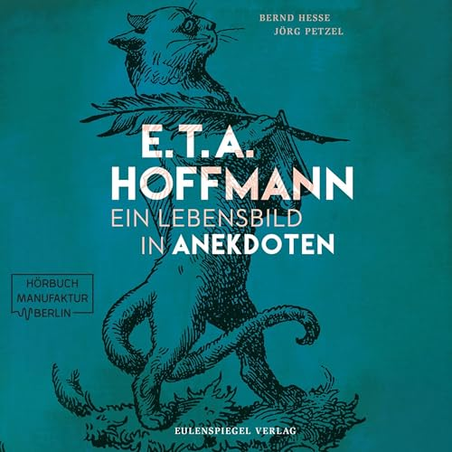
Literaturwissenschaft
Veröffentlichungen, Vorträge und Forschungen zu E. T. A. Hoffmann, Heinrich von Kleist und zum Verhältnis von Recht und Literatur.
Werke
Romane, Erzählungen und Novellen, Lyrik, dramatische Arbeiten und Hörspiele sowie authentische Kriminalfälle und literaturwissenschaftliche Veröffentlichungen.
Lesungen & Veranstaltungen
Informationen zu Lesungen, Vorträgen und aktuellen Veranstaltungen.
Kontakt
Kontaktmöglichkeiten werden hier ergänzt.